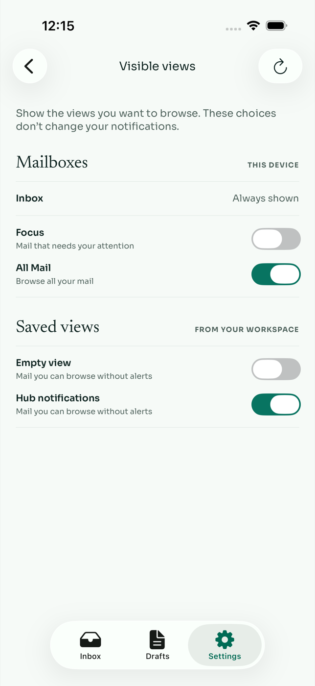
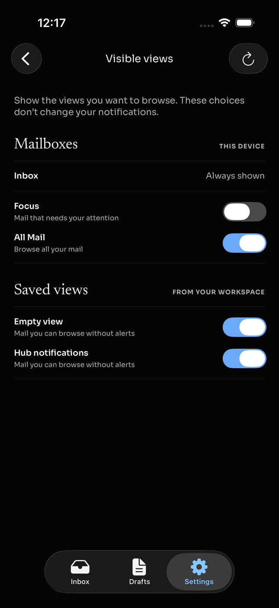
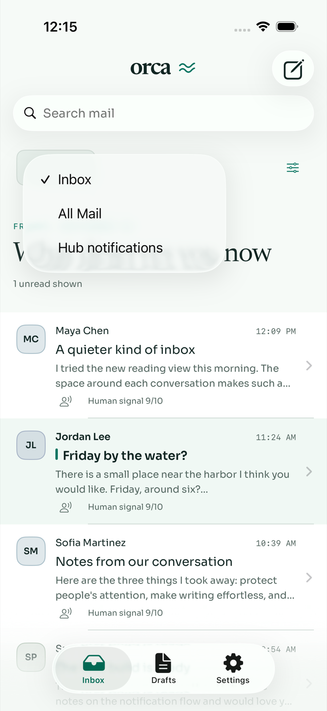
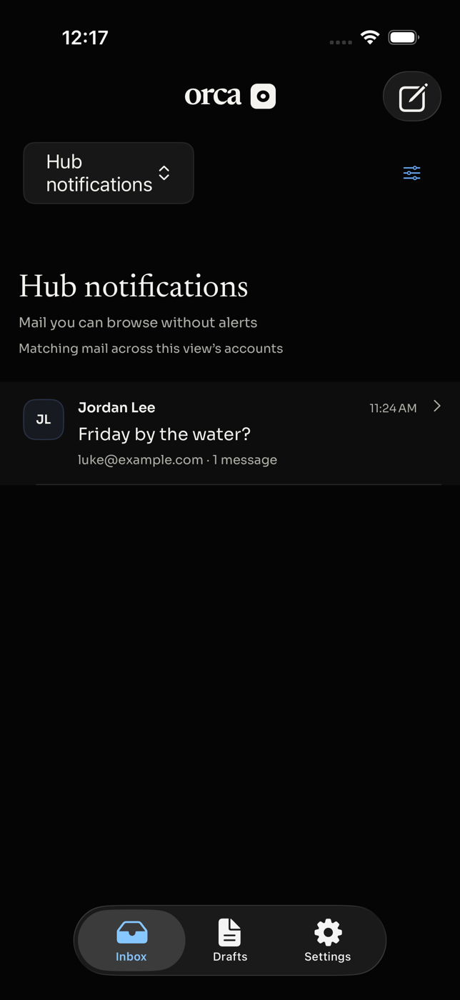
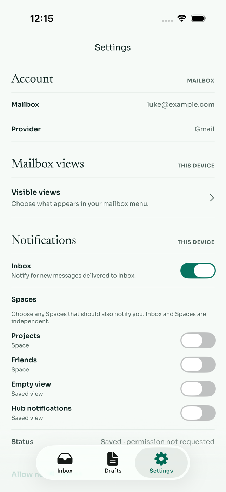
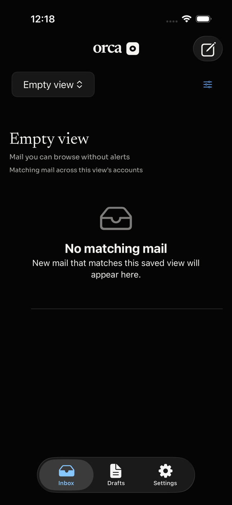

Orca · iOS
Keep a view in reach.
Choose its alerts separately.
Settings → Mailbox views → Visible views lets you show or hide Focus, All Mail, and the saved Views from your workspace. Inbox stays available. These choices are saved on this device for the signed-in user and server.

Choose views for browsing.
The same controls in dark mode.Browse without subscribing to alerts
Turn on Hub notifications under Visible views, then choose it in the mailbox menu. The separate Notifications setting can remain off. Showing or hiding a view never changes its rules or the mail it contains.

Only enabled choices appear in the menu.
Results come from the existing saved View definition.
Alerts stay independent.
An empty View always has a way out.Try it
- Open Settings → Visible views and enable a saved View. Optionally hide Focus.
- Return to the mailbox and choose that view from the dropdown. Confirm its matching conversations appear.
- Open a conversation and tap Reply. Confirm the intended sender and mailbox are retained.
- Check Settings → Notifications: enabling a visible view must not turn on its alerts.
- Relaunch Orca. The chosen views should still appear, and hidden views should remain absent.
- Hide the currently selected view. Inbox becomes the fallback.
- Choose a view with no matches. The menu remains available to leave it.
Data handoff
| Step | Behavior |
|---|
| Catalog | Read existing workspace saved Views. Visibility is a separate local preference; notification preferences are untouched. |
| Results | Use the existing saved-View results endpoint and opaque pagination cursor. The View retains its configured account scope. |
| Open / reply | Carry the result’s account ID and thread ID to the reader. Select only a connected, owned account before opening. |
| Offline / changed view | Cache by signed-in identity, server, view ID and revision. Reject mismatched or unauthorized result identities; deleted views fall back to Inbox. Saved visibility choices survive transient failures. |
Validation
Native iOS build and all 39 unit tests passed. Five UI test executions passed: latest-message opening in light mode, plus visible-view persistence/notification independence and empty-view navigation in both light and dark mode. API typecheck passed. The unit suite covers independent preferences, identity isolation, deleted-view fallback, result revision/account validation, pagination, offline cache scope, delayed responses, and encoded resource IDs. A delayed cache-miss regression reproduced the stale-request overwrite before the fix and passed afterward; newer results, pagination, and error state remain intact.
ORCA_UI_TEST_SCOPE=views apps/ios/OrcaUITests/run-fixture-tests.sh <connection.json> <simulator-udid>
Saved View creation and editing remain in desktop Orca. This change adds iOS browsing and device visibility preferences.